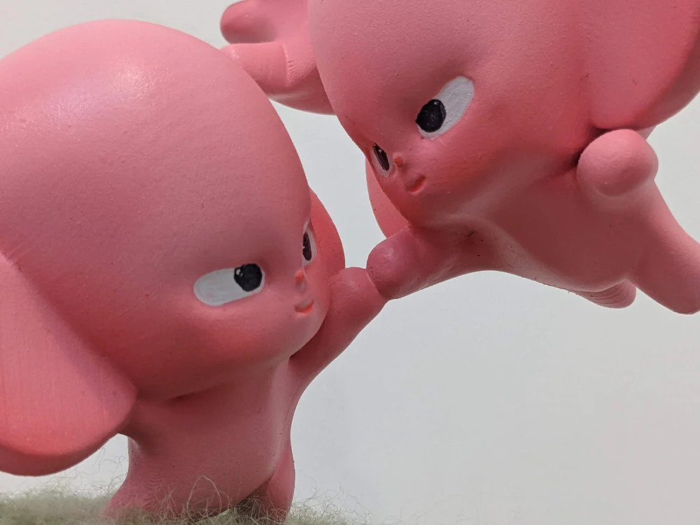
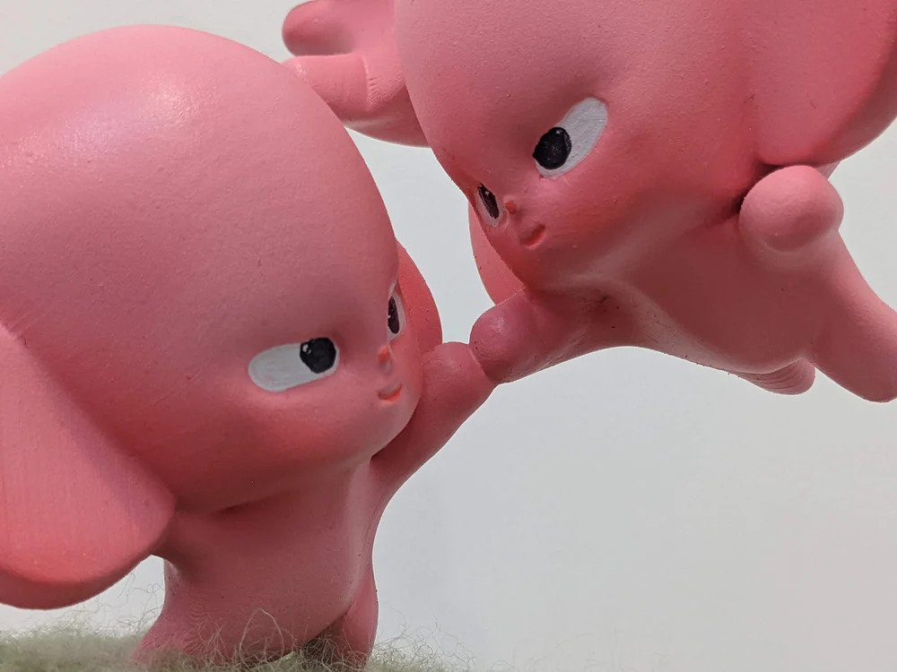

Brain Surgery - Debut Solo Exhibition
· Debut Solo Exhibtion · Exhibited at @14 Langridge Street, Collingwood
Hi, I’m Tim. A visual artist and creative technologist based in Melbourne, Australia.
My practice spans animation, painting, sculpture, and mixed media, combining childlike whimsy with themes of vulnerability, desire, community, and relationships. I use bold lines, bright colours, and surreal imagery to bring these ideas to life.
With over seven years in TV animation, I’ve contributed to projects for Disney+, Netflix, and Disney TVA. My work has been exhibited internationally, including at Gallery IYN (Osaka), &&Gallery (LA), and Lamington Drive (Melbourne). It has also been featured in The Suburban Review and Hag Mag, and I’ve worked as an illustrator for Brimbank City Council and Converse Australia.
· Debut Solo Exhibtion · Exhibited at @14 Langridge Street, Collingwood
· Various Works · Exhibited at Lamington Drive, Collingwood
-6261 Large.jpeg)
-6225 Large.jpeg)
-5943 Large.jpeg)
-6240-2 Large.jpeg)
-6254 Large.jpeg)
· Acrylic on skateboard · Exhibited in For the Deckade at Backwoods Gallery, Collingwood (with FORT HEART)
· House paint on brick wall · Street mural painted in Thornbury (with Daya Czepanski & Converse ANZ)
· Acrylic and felt on 3D printed PLA · Exhibited in Very Superstitious (curated by Tegan Iversen) at SOL Gallery, Fitzroy
· Digital print · Exhibited in Dreaming Girl (夢見る少女) at Gallery IYN, Osaka, Japan
· T-shirt design and tarot card deck · Collaboration with Soft Nice
· Acrylic and felt on 3D printed PLA · Exhibited at Brunswick Street Gallery, Brunswick
 

· House paint on stone wall · Mural at Brookside College, Caroline Springs (R U OK? Day)
· A0 digital print · Promo material for Sticky Institute
· A4 digital print paste-up · Exhibited around Brunswick with Loser Unit
· Felt, foam, arduino, LED screen, motor · Mixed media sculpture exhibited in Art Show in the Small Long House, Malvern